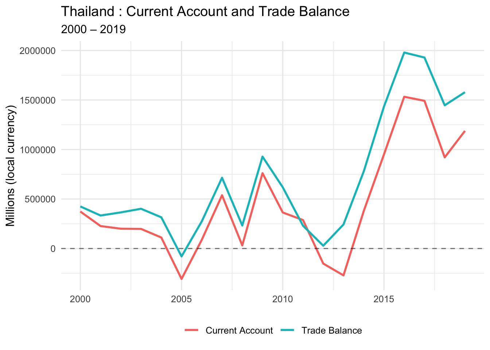
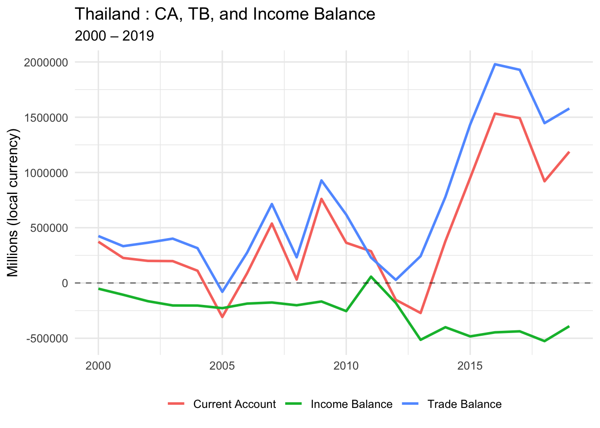
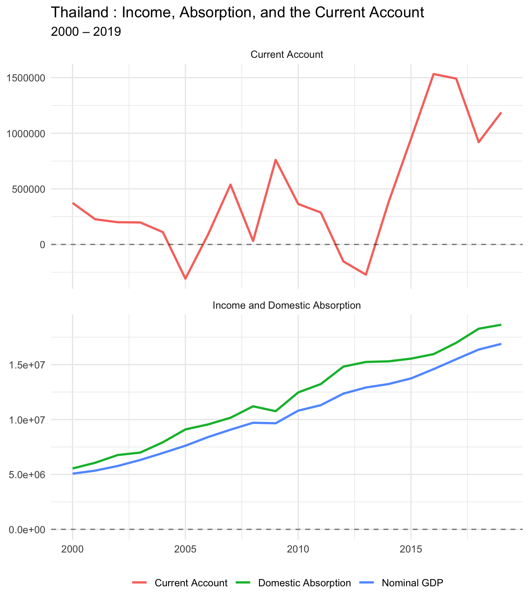
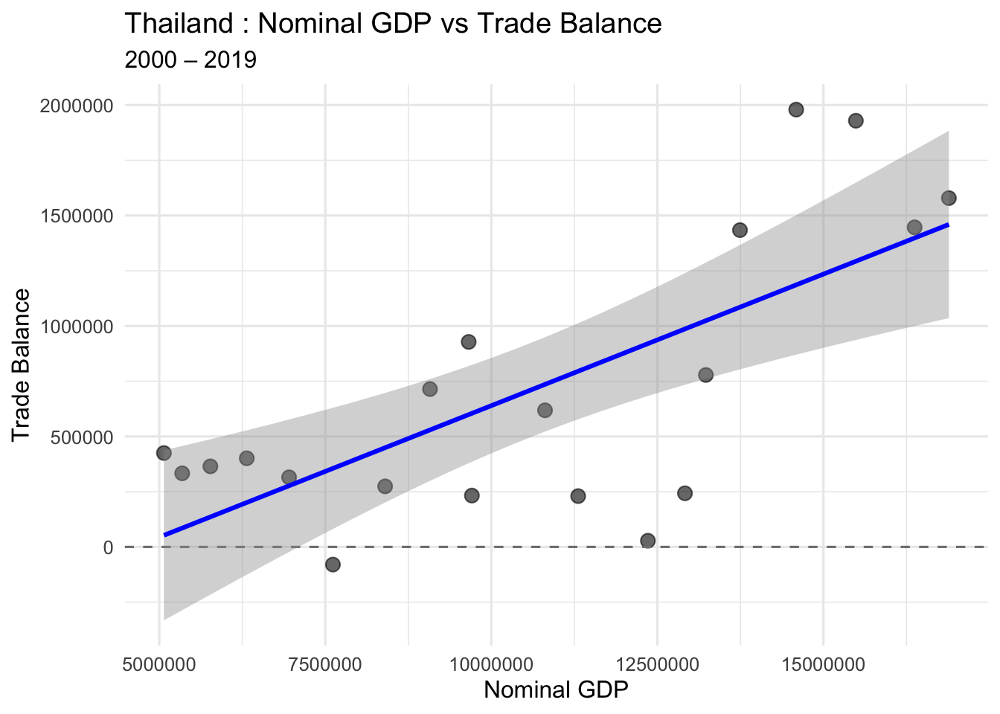

# Load required packages
library(tidyverse) # for data manipulation and plotting
library(readxl) # for reading Excel files
library(writexl) # for writing Excel files
library(glue) # for string formattingProject 1 Live Demo: Current Account Dynamics (GMD Data)
Follow-along Quarto doc (Positron + Copilot + R)
0.1 🎯 Goal for today
By the end of this demo, everyone will be able to:
- Open a Quarto document in Positron
- Run R code step-by-step (chunk-by-chunk)
- Use GitHub Copilot to speed up coding (without turning off your brain)
- Load, clean, and analyze the GMD Excel dataset used in Project 1
- Render this document into an HTML report you can submit/share
📁 Files you need in the SAME folder as this
.qmd
GMD_sub_1995_2019.xlsx(the dataset used in Project 1)- This file:
proj1-gmd-live-demo.qmd
💻 How to render (Positron Terminal)
# Preview while editing (auto-refreshes)
quarto preview proj1-gmd-live-demo.qmd
# Render to HTML (creates .html file)
quarto render proj1-gmd-live-demo.qmd --to html
# Render to PDF (needs LaTeX)
quarto render proj1-gmd-live-demo.qmd --to pdf
🚀 How to follow along in class
- Open this file in Positron
- Click on any code chunk
- Press
Ctrl+Enter(Windows/Linux) orCmd+Enter(Mac) to run that chunk - Watch the output appear below the chunk
- Move to next chunk and repeat
0.2 Step 0 — Install/Load Packages
Run this chunk FIRST. If you get errors, you may need to install packages first.
🤖 Copilot prompt to try
Type this comment in a code chunk and press Tab or Ctrl+I:
Copilot will suggest code to auto-install missing packages!
0.3 Step 1 — Student Inputs (EDIT THESE!)
👉 Students: Change these three variables for YOUR project
# CHANGE THESE VALUES FOR YOUR PROJECT
my_country <- "Thailand" # Pick from list below
start_date <- 2000 # Earliest: 1995
end_date <- 2019 # Latest: 2019 (2018 for Ireland/Mexico)
data_file <- "GMD_sub_1995_2019.xlsx"
📋 20 Ideal Country Options (Pick ONE!)
“Argentina”, “Australia”, “Brazil”, “Chile”, “Colombia”, “Costa Rica”, “Hungary”, “Iceland”, “Indonesia”, “Ireland” (2018), “Malaysia”, “Mexico” (2018), “New Zealand”, “Peru”, “Philippines”, “Poland”, “South Africa”, “South Korea”, “Sri Lanka”, “Thailand”
Demo countries: “Canada”, “United Kingdom”, “United States”
# Check if data file exists
if (!file.exists(data_file)) {
stop(glue(
"❌ Cannot find `{data_file}` in the current folder.\n",
"Fix: Put the Excel file in the same folder as this .qmd, then re-run."
))
} else {
glue("✅ Found data file: {data_file}")
}✅ Found data file: GMD_sub_1995_2019.xlsx0.4 Step 2 — Read and Filter Data
This loads the Excel file and filters it to your chosen country and years.
Proj1 <- read_excel(data_file) %>%
filter(year >= start_date, year <= end_date) %>%
filter(countryname == my_country)
# Show first few rows
head(Proj1)# A tibble: 6 × 52
countryname ISO3 year nGDP rGDP rGDP_pc rGDP_USD deflator cons rcons
<chr> <chr> <dbl> <dbl> <dbl> <dbl> <dbl> <dbl> <dbl> <dbl>
1 Thailand THA 2000 5069820 5.25e6 83465. 221243. 96.5 3.43e6 3.57e6
2 Thailand THA 2001 5345001 5.44e6 85544. 228863. 98.3 3.71e6 3.76e6
3 Thailand THA 2002 5769578 5.77e6 90053. 242936. 100. 3.97e6 3.97e6
4 Thailand THA 2003 6317303 6.18e6 95807. 260401. 102. 4.33e6 4.25e6
5 Thailand THA 2004 6954282 6.57e6 101136. 276779. 106. 4.80e6 4.53e6
6 Thailand THA 2005 7614411 6.85e6 104693. 288369 111. 5.29e6 4.76e6
# ℹ 42 more variables: cons_GDP <dbl>, inv <dbl>, inv_GDP <dbl>, finv <dbl>,
# finv_GDP <dbl>, exports <dbl>, exports_GDP <dbl>, imports <dbl>,
# imports_GDP <dbl>, CA <dbl>, CA_GDP <dbl>, USDfx <dbl>, REER <dbl>,
# govexp <dbl>, govexp_GDP <dbl>, govrev <dbl>, govrev_GDP <dbl>,
# govtax <dbl>, govtax_GDP <dbl>, govdef <dbl>, govdef_GDP <dbl>,
# govdebt <dbl>, govdebt_GDP <dbl>, HPI <lgl>, CPI <dbl>, infl <dbl>,
# pop <dbl>, unemp <dbl>, strate <dbl>, ltrate <dbl>, cbrate <dbl>, …# Quick data check
Proj1 %>%
summarise(
country = first(countryname),
min_year = min(year, na.rm = TRUE),
max_year = max(year, na.rm = TRUE),
n_rows = n(),
n_columns = ncol(.)
) %>%
knitr::kable(caption = "Data Summary")| country | min_year | max_year | n_rows | n_columns |
|---|---|---|---|---|
| Thailand | 2000 | 2019 | 20 | 52 |
⚠️ If you get 0 rows
That means: - Country name doesn’t match exactly (check spelling/capitalization) - Year range is outside available data - Data file is wrong/corrupted
1 PART ONE: Basic Macro and Current Account Dynamics
1.1 1A. Current Account vs Trade Balance (Time Series)
Theory: Current Account (CA) = Trade Balance (TB) + Income Balance (IB)
Let’s plot CA and TB together to see how closely they move.
ggplot(Proj1, aes(x = year)) +
geom_line(aes(y = CA, color = "Current Account"), linewidth = 1) +
geom_line(aes(y = trade_balance, color = "Trade Balance"), linewidth = 1) +
geom_hline(yintercept = 0, linetype = "dashed", alpha = 0.5) +
labs(
title = paste(my_country, ": Current Account and Trade Balance"),
subtitle = paste(start_date, "–", end_date),
x = NULL,
y = "Millions (local currency)",
color = NULL
) +
theme_minimal(base_size = 12) +
theme(legend.position = "bottom")
📊 What to look for:
- Do CA and TB move together?
- Are they close in value?
- When do they diverge?
- Are both positive, both negative, or mixed?
1.2 1B. Current Account vs Trade Balance (Scatter Plot)
This shows the relationship between CA and TB more clearly.
ggplot(Proj1, aes(x = CA, y = trade_balance)) +
geom_point(size = 3, alpha = 0.6) +
geom_hline(yintercept = 0, linetype = "dashed", color = "gray50") +
geom_vline(xintercept = 0, linetype = "dashed", color = "gray50") +
geom_abline(intercept = 0, slope = 1, linetype = "dashed", color = "red") +
labs(
title = paste(my_country, ": Current Account vs Trade Balance"),
subtitle = "Red dashed line: perfect 1:1 relationship",
x = "Current Account",
y = "Trade Balance"
) +
theme_minimal(base_size = 12)
🔍 Interpretation guide:
- Points on red line: CA = TB (no income balance)
- Points above red line: TB > CA (negative income balance)
- Points below red line: CA > TB (positive income balance)
1.3 1C. Correlation Between CA and TB
Calculate the correlation coefficient to quantify the relationship.
cor_CA_TB <- cor(
x = Proj1$CA,
y = Proj1$trade_balance,
method = "pearson",
use = "complete.obs"
)
glue("Correlation (CA, TB) = {round(cor_CA_TB, 4)}")Correlation (CA, TB) = 0.9735
🤖 Copilot prompt to try:
# Explain why the correlation between CA and TB is close to but not exactly 11.4 1D. Calculate Income Balance
Income Balance = CA − TB
This represents net income from foreign assets (interest, dividends, etc.)
Proj1 <- Proj1 %>%
mutate(income_balance = CA - trade_balance)
# Show summary statistics
Proj1 %>%
summarise(
mean_IB = mean(income_balance, na.rm = TRUE),
median_IB = median(income_balance, na.rm = TRUE),
min_IB = min(income_balance, na.rm = TRUE),
max_IB = max(income_balance, na.rm = TRUE)
) %>%
knitr::kable(digits = 2, caption = "Income Balance Summary Statistics")| mean_IB | median_IB | min_IB | max_IB |
|---|---|---|---|
| -263275.2 | -203737.7 | -525965.6 | 57392.56 |
1.5 1E. Plot All Three: CA, TB, and Income Balance
ggplot(Proj1, aes(x = year)) +
geom_line(aes(y = CA, color = "Current Account"), linewidth = 1) +
geom_line(aes(y = trade_balance, color = "Trade Balance"), linewidth = 1) +
geom_line(aes(y = income_balance, color = "Income Balance"), linewidth = 1) +
geom_hline(yintercept = 0, linetype = "dashed", alpha = 0.5) +
labs(
title = paste(my_country, ": CA, TB, and Income Balance"),
subtitle = paste(start_date, "–", end_date),
x = NULL,
y = "Millions (local currency)",
color = NULL
) +
theme_minimal(base_size = 12) +
theme(legend.position = "bottom")
💡 Key Question for Class Discussion:
Q: What explains the difference between CA and TB?
A: Income Balance (r × B), which represents international asset earnings/payments
2 PART TWO: Absorption Approach (GDP vs Domestic Absorption)
2.1 2A. Calculate Domestic Absorption
Domestic Absorption = C + I + G
This is total domestic spending (consumption + investment + government).
Proj1 <- Proj1 %>%
mutate(dom_abs = cons + inv + govexp)
# Quick check
Proj1 %>%
select(year, nGDP, dom_abs, CA) %>%
head() %>%
knitr::kable(digits = 0, caption = "GDP, Absorption, and CA (first 6 years)")| year | nGDP | dom_abs | CA |
|---|---|---|---|
| 2000 | 5069820 | 5543275 | 373544 |
| 2001 | 5345001 | 6061942 | 226628 |
| 2002 | 5769578 | 6766900 | 199974 |
| 2003 | 6317303 | 6991474 | 197984 |
| 2004 | 6954282 | 7927919 | 110990 |
| 2005 | 7614411 | 9098803 | -307470 |
📚 Theory reminder:
CA = GDP − (C + I + G)
Or equivalently: CA = GDP − Domestic Absorption
- When absorption > GDP → CA is negative (borrowing)
- When GDP > absorption → CA is positive (lending)
2.2 2B. Plot GDP, Absorption, and CA (Faceted)
Proj1_long_abs <- Proj1 %>%
select(year, nGDP, dom_abs, CA) %>%
pivot_longer(
cols = c(nGDP, dom_abs, CA),
names_to = "variable",
values_to = "value"
) %>%
mutate(
panel = case_when(
variable %in% c("nGDP", "dom_abs") ~ "Income and Domestic Absorption",
variable == "CA" ~ "Current Account"
),
variable = recode(
variable,
nGDP = "Nominal GDP",
dom_abs = "Domestic Absorption",
CA = "Current Account"
)
)
ggplot(Proj1_long_abs, aes(x = year, y = value, color = variable)) +
geom_line(linewidth = 1) +
geom_hline(yintercept = 0, linetype = "dashed", alpha = 0.5) +
facet_wrap(~ panel, ncol = 1, scales = "free_y") +
labs(
title = paste(my_country, ": Income, Absorption, and the Current Account"),
subtitle = paste(start_date, "–", end_date),
x = NULL,
y = NULL,
color = NULL
) +
theme_minimal(base_size = 12) +
theme(legend.position = "bottom")
🤖 Copilot prompt:
# Write a paragraph explaining what it means when domestic absorption exceeds GDP3 PART THREE: Savings-Investment Approach
3.1 3A. Calculate National Savings
National Savings = GDP − C − G
(We subtract consumption and government spending from GDP)
Proj1 <- Proj1 %>%
mutate(savings = nGDP - (cons + govexp))
# Summary stats
Proj1 %>%
summarise(
mean_savings = mean(savings, na.rm = TRUE),
mean_investment = mean(inv, na.rm = TRUE),
mean_CA = mean(CA, na.rm = TRUE)
) %>%
knitr::kable(digits = 0, caption = "Average Savings, Investment, and CA")| mean_savings | mean_investment | mean_CA |
|---|---|---|
| 1175354 | 2620013 | 445426 |
📚 Theory reminder:
CA = S − I
- When S > I → CA positive (country is lending/saving abroad)
- When I > S → CA negative (country is borrowing to invest)
3.2 3B. Plot Savings, Investment, and CA
Proj1_sav_inv_long <- Proj1 %>%
select(year, savings, inv, CA) %>%
pivot_longer(
cols = c(savings, inv, CA),
names_to = "variable",
values_to = "value"
) %>%
mutate(
panel = if_else(variable == "CA", "Current Account", "Savings and Investment"),
variable = recode(
variable,
savings = "Savings",
inv = "Investment",
CA = "Current Account (CA)"
)
)
ggplot(Proj1_sav_inv_long, aes(x = year, y = value, color = variable)) +
geom_line(linewidth = 1) +
geom_hline(yintercept = 0, linetype = "dashed", alpha = 0.5) +
facet_wrap(~ panel, ncol = 1, scales = "free_y") +
labs(
title = paste(my_country, ": Savings, Investment, and the Current Account"),
subtitle = paste(start_date, "–", end_date),
x = NULL,
y = NULL,
color = NULL
) +
theme_minimal(base_size = 12) +
theme(legend.position = "bottom")
4 PART FOUR: Business Cycle Correlations
4.1 4A. Correlation Matrix
Let’s see how GDP, absorption, and trade balance move together.
cor_matrix <- Proj1 %>%
select(nGDP, dom_abs, trade_balance, CA) %>%
cor(use = "complete.obs")
cor_matrix %>%
knitr::kable(digits = 3, caption = "Correlation Matrix")| nGDP | dom_abs | trade_balance | CA | |
|---|---|---|---|---|
| nGDP | 1.000 | 0.996 | 0.712 | 0.610 |
| dom_abs | 0.996 | 1.000 | 0.653 | 0.544 |
| trade_balance | 0.712 | 0.653 | 1.000 | 0.973 |
| CA | 0.610 | 0.544 | 0.973 | 1.000 |
4.2 4B. GDP vs Trade Balance
cor_gdp_tb <- cor(Proj1$nGDP, Proj1$trade_balance, use = "complete.obs")
cor_gdp_ca <- cor(Proj1$nGDP, Proj1$CA, use = "complete.obs")
glue("Correlation (GDP, TB) = {round(cor_gdp_tb, 4)}")Correlation (GDP, TB) = 0.7122glue("Correlation (GDP, CA) = {round(cor_gdp_ca, 4)}")Correlation (GDP, CA) = 0.6096
🔍 Interpretation:
- Negative correlation: Trade balance/CA moves opposite to GDP (counter-cyclical)
- Positive correlation: Trade balance/CA moves with GDP (pro-cyclical)
4.3 4C. Scatter: GDP vs Trade Balance
ggplot(Proj1, aes(x = nGDP, y = trade_balance)) +
geom_point(size = 3, alpha = 0.6) +
geom_hline(yintercept = 0, linetype = "dashed", color = "gray50") +
geom_smooth(method = "lm", se = TRUE, color = "blue") +
labs(
title = paste(my_country, ": Nominal GDP vs Trade Balance"),
subtitle = paste(start_date, "–", end_date),
x = "Nominal GDP",
y = "Trade Balance"
) +
theme_minimal(base_size = 12)
4.4 4D. Scatter: Domestic Absorption vs Trade Balance
cor_abs_tb <- cor(Proj1$dom_abs, Proj1$trade_balance, use = "complete.obs")
ggplot(Proj1, aes(x = dom_abs, y = trade_balance)) +
geom_point(size = 3, alpha = 0.6) +
geom_hline(yintercept = 0, linetype = "dashed", color = "gray50") +
geom_smooth(method = "lm", se = TRUE, color = "red") +
labs(
title = paste(my_country, ": Domestic Absorption vs Trade Balance"),
subtitle = glue("Correlation = {round(cor_abs_tb, 3)}"),
x = "Domestic Absorption",
y = "Trade Balance"
) +
theme_minimal(base_size = 12)
4.5 4E. Time Series: GDP, Absorption, and TB
Proj1_long_cyc <- Proj1 %>%
select(year, nGDP, dom_abs, trade_balance) %>%
pivot_longer(
cols = c(nGDP, dom_abs, trade_balance),
names_to = "variable",
values_to = "value"
) %>%
mutate(
panel = case_when(
variable %in% c("nGDP", "dom_abs") ~ "Income and Domestic Absorption",
variable == "trade_balance" ~ "Trade Balance"
),
variable = recode(
variable,
nGDP = "Nominal GDP",
dom_abs = "Domestic Absorption",
trade_balance = "Trade Balance"
)
)
ggplot(Proj1_long_cyc, aes(x = year, y = value, color = variable)) +
geom_line(linewidth = 1) +
geom_hline(yintercept = 0, linetype = "dashed", alpha = 0.5) +
facet_wrap(~ panel, ncol = 1, scales = "free_y") +
labs(
title = paste(my_country, ": Income, Absorption, and the Trade Balance"),
subtitle = paste(start_date, "–", end_date),
x = NULL,
y = NULL,
color = NULL
) +
theme_minimal(base_size = 12) +
theme(legend.position = "bottom")
5 PART FIVE: Government Balance
5.1 5A. Government Revenues, Expenditures, and Deficit
Proj1_gov_long <- Proj1 %>%
select(year, govrev, govexp, govdef) %>%
pivot_longer(
cols = c(govrev, govexp, govdef),
names_to = "variable",
values_to = "value"
) %>%
mutate(
panel = if_else(variable == "govdef",
"Government Deficit",
"Government Revenues and Expenditures"),
variable = recode(
variable,
govrev = "Government Revenue",
govexp = "Government Expenditure",
govdef = "Government Deficit"
)
)
ggplot(Proj1_gov_long, aes(x = year, y = value, color = variable)) +
geom_line(linewidth = 1) +
geom_hline(yintercept = 0, linetype = "dashed", alpha = 0.5) +
facet_wrap(~ panel, ncol = 1, scales = "free_y") +
labs(
title = paste(my_country, ": Government Revenues, Expenditures, and Deficit"),
subtitle = paste(start_date, "–", end_date),
x = NULL,
y = NULL,
color = NULL
) +
theme_minimal(base_size = 12) +
theme(legend.position = "bottom")
5.2 5B. Government Deficit and Current Account
Are “twin deficits” present? (Government deficit and CA deficit moving together)
Proj1_govdef_ca_long <- Proj1 %>%
select(year, govdef, CA) %>%
pivot_longer(
cols = c(govdef, CA),
names_to = "variable",
values_to = "value"
) %>%
mutate(
variable = recode(
variable,
govdef = "Government Deficit",
CA = "Current Account"
)
)
ggplot(Proj1_govdef_ca_long, aes(x = year, y = value, color = variable)) +
geom_line(linewidth = 1) +
geom_hline(yintercept = 0, linetype = "dashed", alpha = 0.5) +
facet_wrap(~ variable, ncol = 1, scales = "free_y") +
labs(
title = paste(my_country, ": Government Balance and Current Account"),
subtitle = paste(start_date, "–", end_date),
x = NULL,
y = NULL
) +
theme_minimal(base_size = 12) +
theme(legend.position = "none")
cor_govdef_ca <- cor(Proj1$govdef, Proj1$CA, use = "complete.obs")
glue("Correlation (Gov Deficit, CA) = {round(cor_govdef_ca, 4)}")Correlation (Gov Deficit, CA) = -0.0825.3 5C. As % of GDP
Proj1_govdef_ca_gdp_long <- Proj1 %>%
select(year, govdef_GDP, CA_GDP) %>%
pivot_longer(
cols = c(govdef_GDP, CA_GDP),
names_to = "variable",
values_to = "value"
) %>%
mutate(
variable = recode(
variable,
govdef_GDP = "Government Deficit (% GDP)",
CA_GDP = "Current Account (% GDP)"
)
)
ggplot(Proj1_govdef_ca_gdp_long, aes(x = year, y = value, color = variable)) +
geom_line(linewidth = 1) +
geom_hline(yintercept = 0, linetype = "dashed", alpha = 0.5) +
facet_wrap(~ variable, ncol = 1, scales = "free_y") +
labs(
title = paste(my_country, ": Government Balance (% GDP) and Current Account (% GDP)"),
subtitle = paste(start_date, "–", end_date),
x = NULL,
y = "Percent of GDP"
) +
theme_minimal(base_size = 12) +
theme(legend.position = "none")
6 PART SIX: Export Cleaned Data
6.1 6. Save Your Work
Export the cleaned dataset with all calculated variables.
# Create filename
clean_file <- paste0(
"Proj1_clean_",
gsub(" ", "_", my_country),
"_",
start_date,
"_",
end_date,
".xlsx"
)
# Write to Excel
write_xlsx(Proj1, clean_file)
glue("✅ Exported cleaned data to: {clean_file}")✅ Exported cleaned data to: Proj1_clean_Thailand_2000_2019.xlsx7 Summary and Key Takeaways
7.1 What We Learned Today
- ✅ How to load and filter Excel data in R
- ✅ Current Account = Trade Balance + Income Balance
- ✅ CA = GDP − (C + I + G) (absorption approach)
- ✅ CA = S − I (savings-investment approach)
- ✅ How to create professional time-series and scatter plots
- ✅ How to calculate correlations and interpret them
- ✅ How to use Copilot to speed up coding
- ✅ How to render a Quarto document to HTML/PDF
7.2 Student Checklist (What to Submit)
📋 Before you submit:
- ✅ Change
my_country,start_date,end_dateto YOUR chosen values - ✅ Re-run ALL code chunks from top to bottom
- ✅ Render to HTML:
quarto render proj1-gmd-live-demo.qmd --to html - ✅ Check that all plots show YOUR country’s data
- ✅ Submit:
- Your rendered
.htmlfile - Your edited
.qmdfile - Your cleaned
.xlsxexport (optional) - Your GitHub repo link (if applicable)
- Your rendered
7.3 Copilot Prompts You Can Try
🤖 Useful prompts for your project:
For understanding: - “Explain what the current account measures in plain English” - “Why would a country have a negative current account?” - “What’s the difference between trade balance and current account?”
For coding: - “Add a column that calculates CA as percent of GDP” - “Create a scatter plot with a regression line” - “Write code to export only specific columns to Excel”
For writing: - “Write a paragraph explaining why this country’s CA is negative/positive” - “Summarize the relationship between government deficit and CA in 3 sentences” - “What does a correlation of X mean in this context?”
7.4 Resources
- Quarto Documentation: https://quarto.org/docs/
- GitHub Copilot for Students: https://education.github.com/pack
- Positron IDE: https://positron.posit.co
- ggplot2 Reference: https://ggplot2.tidyverse.org
- Your instructor: YOUR-EMAIL
7.5 Questions?
💬 After class:
- Email me with questions: YOUR-EMAIL
- Office hours: [YOUR DAYS/TIMES]
- Post in course discussion board
- Work with classmates!
🎉 Congratulations! You’ve completed the live demo!
Now try changing the country, re-running all chunks, and rendering your own version!
✅ Demo complete! Now customize and render your own version.